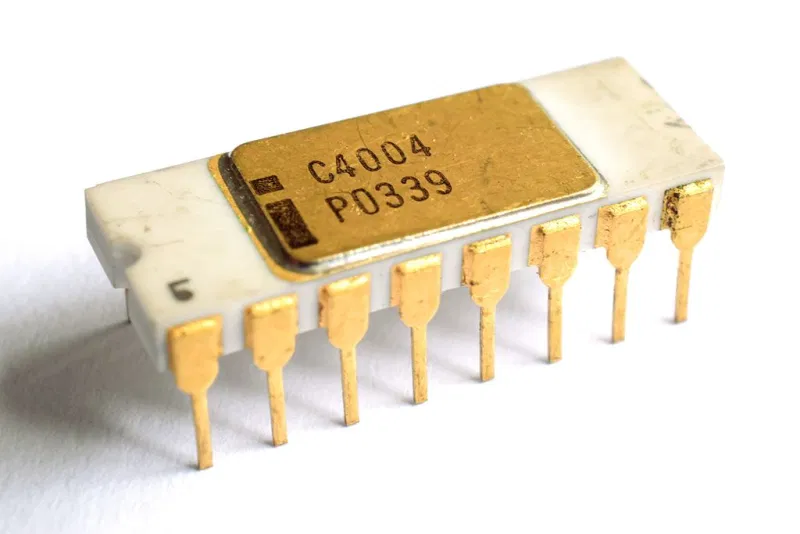
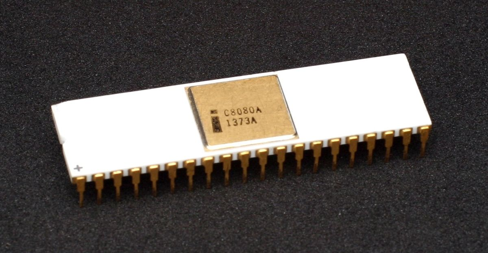
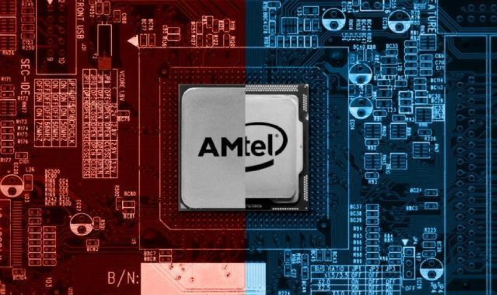

History of Computer Processing Units
Home
Modern CPUs
Table of Contents
- Origins
- The Breakthrough
- Development
Origins
The first CPU made was the Intel 4004. It was launched late 1971, and it was the first microprocessor ever, and the start of a long line of future Intel CPUs.

The man who created it is named Federico Faggin. He led the project from its beginning to its end in late 1971.
He then went on to develop the CPU's successor; the Intel 8080, which became an industry standard and had wide spread success.
Faggin in September 2011. Retrieved from https://en.wikipedia.org/wiki/Federico_Faggin
The Breakthrough
The technological break through in the 80s allowed for CPUs to perform faster and calculate the results of the current one while receiving the next one.
A major step in evolving modern CPUs capable of extreme multi tasking.
Modern CPUs also boasts ground breaking technology and abilities. Many of which did not exist before the 90s and 2000s. Some of this include multi-core; which greatly improved CPU speed.
One of the finest examples is the breakthrough that created the Intel 8080, which was much faster than any previous design and because of this, became the industry's standard and influenced even today's CPU designs.

Intel 8080. Retrieved from https://upload.wikimedia.org/wikipedia/commons/thumb/3/3a/KL_Intel_i8080_Black_Background.jpg/1200px-KL_Intel_i8080_Black_Background.jpg
Development
Currently, there are 2 major distributors and creators of modern CPUs, they are Intel, and AMD.

Intel and AMD Competition. Retrieved from https://econreview.berkeley.edu/intel-and-amd-market-competition/
Intel have been in the lead for many years but now AMD is starting to catchup and even outcompete in some aspects. AMD's cost affordable price lets those on a budget have a formidable CPU.
Modern CPUs boast impressive capabilities, and powerful specifications. Such as an impressive cache of over 200MB, double digit core counts, and lighting clock speeds.
These impressive numbers allow a CPU to perform their task better and stronger with more stability.
Compared to the Intel 4004; the first CPU. The newer i9 10900K's clockspeed is more than 7000 times faster than the Intel 4004!
The then mainstream Intel 8080 in the mid 70s, which had an average clock speed of 2500khz is more than 3 times faster than the Intel 4004 at 740khz. Although a meagre compared to modern CPUs, this was a step forward in its technology.
We will talk more about modern day CPUs in the next section, which talks about modern computers, specs, and much more!
For more information, go to:
Federico Faggin
and
Intel 8080
Home
Modern CPUs